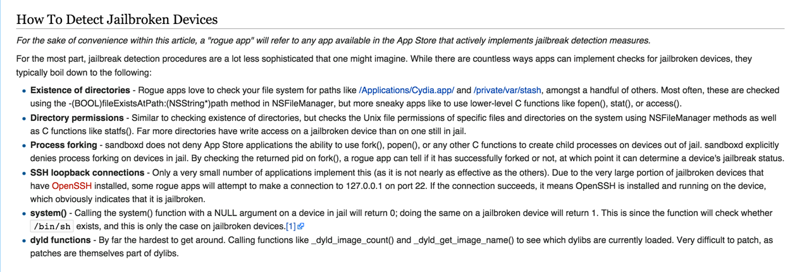
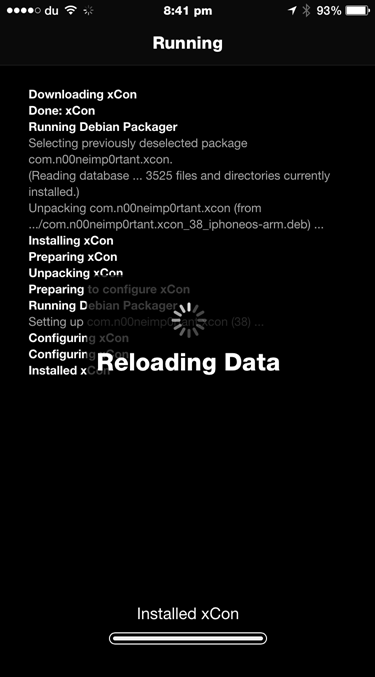
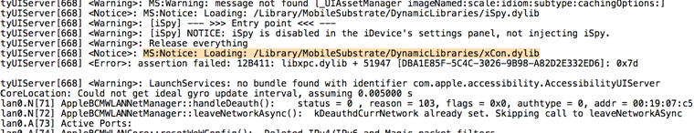
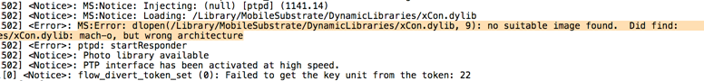
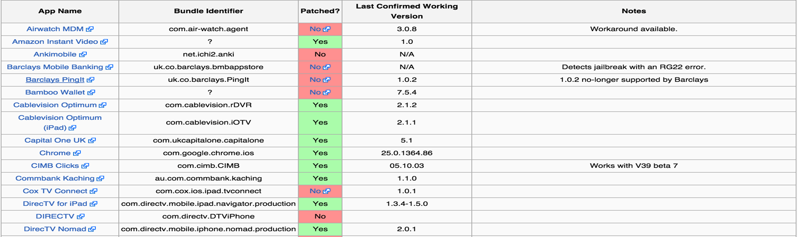

In this small article, we will look at a very handful utility named Xcon for bypassing Jailbreak detection. As per the wiki page …
xCon is a collaborative project by n00neimp0rtant and Lunatik that aims to be an all-in-one solution for hooking every known method and function responsible for informing an application of a jailbroken device. At first, the project aimed to patch applications on a per-app basis, but now it uses lower-level hooks to cover any apps that attempt to use the same procedure, even patching apps not explicitly reversed by the developers. Originally an open-source project, it remains closed-source now to discourage App Store developers from working around xCon’s hooks.
A very handful resource for detecting jailbroken devices can be found here. Here is a screenshot from the page. The purpose of Xcon is to make sure all these checks fail.

Downloading Xcon in your project is very straightforward. Make sure http://apt.modmyi.com is added as a source in Cydia and search for Xcon. Install in on your device and restart your device.

Once you run any app, you will notice that the library will inject into the process as can be seen from the following device logs. 
If you are performing jailbreak detection in your application, it is recommended to have your app checked against Xcon. The library is closed source as making it open source will help developers understand how it works and hence make workarounds to their code.
Please note that the current version of Xcon has a lot of issues with iOS 8 and 64 bit devices. Hence it is recommended to run your app on a 32 bit device if you want to test it against Xcon. A complete list of all the issues occuring with Xcon can be found here.

ETHICAL HACKING TRAINING – RESOURCES (INFOSEC)
Xcon has already patched jailbreak checks done by a lot of the popular apps and it also maintains a list of it. A screenshot of it can be found below. To see the complete list, you can visit Xcon’s page.

Xcon is a recommended package to install on your device if you are pentesting an app that does jailbreak detection or if you are a developer and want to know that your jailbreak detection algorithm is accurate.